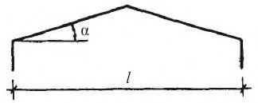

Справочная интерактивная копия для удобной работы с документом.
Не является официальным опубликованием. Официальный источник —
Минстрой России.
Перед применением проверяйте актуальность редакции и перечень обязательных требований.
О документе: разработчики, утверждение, регистрация, ключевые слова
Цели и принципы стандартизации в Российской Федерации установлены Федеральным законом от 27 декабря 2002 г. № 184-ФЗ «о техническом регулировании», а правила разработки постановлением Правительства Российской Федерации от 19 ноября 2008 г. № 858 «О порядке разработки и утверждения сводов правил».
- 1 ИСПОЛНИТЕЛИ - Московский филиал федерального государственного бюджетного научного учреждения «Российский научно-исследовательский институт информации и технико-экономических исследований по инженерно-техническому обеспечению агропромышленного комплекса (НПЦ «Гипронисельхоз»)
- 2 ВНЕСЕН Техническим комитетом по стандартизации ТК 465 «Строительство»
- 3 ПОДГОТОВЛЕН к утверждению Департаментом архитектуры, строительства и градостроительной политики
- 4 УТВЕРЖДЕН приказом Министерства регионального развития Российской Федерации (Минрегион России) от 30.06.2012 г. № 271 и введен в действие с 1 января 2013 г.
- 5 ЗАРЕГИСТРИРОВАН Федеральным агентством по техническому регулированию и метрологии (Росстандарт). Пересмотр СП 107.13330.2011 «СНиП 2.10.04-84 Теплицы и парники»
Информация об изменениях к настоящему своду правил публикуется в ежегодно издаваемом информационном указателе «Национальные стандарты», а текст изменений и поправок - в ежемесячно издаваемых информационных указателях «Национальные стандарты». В случае пересмотра (замены) или отмены настоящего свода правил соответствующее уведомление будет опубликовано в ежемесячно издаваемом информационном указателе «Национальные стандарты». Соответствующая информация, уведомление и тексты размещаются также в информационной системе общего пользования - на официальном сайте разработчика (Минрегион России) в сети Интернет
Настоящий нормативный документ не может быть полностью или частично воспроизведен, тиражирован и распространен в качестве официального издания на территории Российской Федерации без разрешения Минрегиона России
Дата введения 2013-01-01
УДК 131.234:69
ОКС 91.090
Ключевые слова - свод правил, проектирование, строительство, теплицы и парники, объемно-планировочные решения, строительные конструкции, отопление, вентиляция, водопровод, водостоки, дренаж, электрические устройства
Введение
В своде правил установлены требования в соответствии с Федеральным законом от 30 декабря 2009 г. № 384-ФЗ «Технический регламент о безопасности зданий и сооружений», учтены требования международных и европейских нормативных документов, применены единые методы определения эксплуатационных характеристик и методов оценки. Учтены также требования Федерального закона от 22 июля 2008 г. № 123-ФЗ «Технический регламент о требованиях пожарной безопасности» и сводов правил системы противопожарной защиты.
Работа выполнена авторским коллективом Московского филиала Федерального государственного бюджетного научного учреждения «Российский научно-исследовательский институт информации и техникоэкономических исследований по инженерно-техническому обеспечению агропромышленного комплекса» (НПЦ «Гипронисельхоз»): канд. сельскохозяйственных наук, руководитель проекта П.Н. Виноградов, канд. техн. наук С.С. Шевченко, ст. науч. сотрудник О.Л. Седов, ООО «Агрисовгаз» БНКСТ: заместитель генерального директора В.В. Гришечко , заместитель начальника проектно-конструкторского бюро В.Г. Притула.
Настоящий свод правил распространяется на проектирование новых и реконструируемых зимних и сезонных овощных и рассадных теплиц и парников, предназначенных для выращивания овощей и рассады, входящих в состав тепличных овощных комбинатов (ТОК), рассадно-овощных тепличных комбинатов (РОТК), а также других объектов защищенного грунта.
2Нормативные ссылки
В настоящем своде правил приведены ссылки на следующие нормативные документы:
ГОСТ Р 50571.14-96 Электроустановки зданий. Часть 7. Требования к специальным электроустановкам. Раздел 705. Электроустановки сельскохозяйственных и животноводческих помещений
ГОСТ Р 54257-2010 Надежность строительных конструкций и оснований. Основные положения и требования
ГОСТ 12.1.003-83 ССБТ. Шум. Общие требования безопасности
ГОСТ 12.1.005-88 ССБТ. Общие санитарно-гигиенические требования к воздуху рабочей зоны
ГОСТ 12.3.002-75 ССБТ. Процессы производственные. Общие требования безопасности
ГОСТ 12.3.006-75 ССБТ. Эксплуатация водопроводных и канализационных сооружений и сетей. Общие требования безопасности
ГОСТ 111-2001 Стекло листовое. Технические условия
ГОСТ 10354-82* Пленка полиэтиленовая. Технические условия
ГОСТ 23838-89 Здания предприятий. Параметры
СНиП 12-04-2002 Безопасность труда в строительстве. Часть 2. Строительное производство
СП 2.13130.2009 Системы противопожарной защиты. Обеспечение огнестойкости объектов защиты
СП 4.13130.2009 Системы противопожарной защиты. Ограничение распространения пожара на объектах защиты. Требования к объемно-планировочным и конструктивным решениям
СП 5.13130.2009 Системы противопожарной защиты. Установка пожарной сигнализации и пожаротушения автоматические. Нормы и правила проектирования
СП 6.13130.2009 Системы противопожарной защиты. Электрооборудование. Требования пожарной безопасности
СП 7.13130.2009 Отопление, вентиляция и кондиционирование. Противопожарные требования
СП 10.13130.2009 Системы противопожарной защиты. Внутренний противопожарный водопровод. Требования пожарной безопасности
СП 12.13130.2009 Определение категорий помещений, зданий и наружных установок по взрывопожарной и пожарной опасности
СП 16.13330.2011 «СНиП II-23-81* Стальные конструкции»
СП 19.13330.2011 «СНиП II-97-76 Генеральные планы сельскохозяйственных предприятий»
СП 20.13330.2011 «СНиП 2.02.07-85* Нагрузки и воздействия»
СП 22.13330.2011 «СНиП 2.02.01-83* Основания зданий и сооружений»
СП 28.13330.2012 «СНиП 2.03.11-85 Защита строительных конструкций от коррозии»
СП 29.13330.2011 «СНиП 2.03.13-88 Полы»
СП 30.13330.2012 «СНиП 2.04.01-85* Внутренний водопровод и канализация зданий»
СП 44.13330.2011 «СНиП 2.09.04-87* Административные и бытовые здания»
СП 50.13330.2012 «СНиП 23-02-2003 Тепловая защита зданий»
СП 56.13330.2011 «СНиП 31-03-2001 Производственные здания»
СП 59.13330.2012 «СНиП 35-01-2001 Доступность зданий и сооружений для маломобильных групп населения»
СП 60.13330.2012 «СНиП 41-01-2003 Отопление, вентиляция и кондиционирование»
СП 63.13330.2012 «СНиП 52-01-2003 Бетонные и железобетонные конструкции. Основные положения»
СП 64.13330.2011 «СНиП II-25-80 Деревянные конструкции»
СП 131.13330.2012 «СНиП 23-01-99* Строительная климатология»
СанПиН 2.1.4.1074-01 Питьевая вода. Гигиенические требования к качеству воды централизованных систем питьевого водоснабжения. Контроль качества
СанПиН 2.2.1/2.1.1.1200-03 Санитарно-защитные зоны и санитарная классификация предприятий, сооружений и иных объектов
СанПиН 5791-91 Санитарные правила и нормы по устройству и эксплуатации теплиц и тепличных комбинатов
Примечание - При пользовании настоящим сводом правил целесообразно проверить действие ссылочных стандартов и сводов правил в информационной системе общего пользования - на официальном сайте национального органа Российской Федерации по стандартизации в сети Интернет или по ежегодно издаваемому информационному указателю «Национальные стандарты», который опубликован по состоянию на 1 января текущего года, и по соответствующим ежемесячно издаваемым информационным указателям, опубликованным в текущем году. Если ссылочный документ заменен (изменен), то при пользовании настоящим сводом правил следует руководствоваться замененным (измененным) документом. Если ссылочный документ отменен без замены, то положение, в котором дана ссылка на него, применяется в части, не затрагивающей эту ссылку.
3Термины и определения
В настоящем своде правил приняты следующие термины с соответствующими определениями:
3.1ангарные теплицы
Однопролетные сооружения защищенного грунта.
3.2биотопливо
Смесь навоза, торфа или соломы, имеющая способность «самовозгораться изнутри», повышая температуру почвенного слоя и воздуха сооружения.
3.3блочные (многопролетные) теплицы
Многопролетные сооружения, блокируемые из отдельных звеньев теплиц.
3.4сезонные (весенние) теплицы
Сезонные теплицы с весенне-осенним оборотом овощных культур.
3.5гидропонные теплицы
Теплицы, в которых корнеобитаемым слоем растений служат искусственные субстраты с применением питательной среды.
3.6дозаривание
Способность сорванных недозрелыми плодов приобретать биологическую спелость.
3.7зимние теплицы
Теплицы круглогодового действия.
3.8камера дозаривания
Герметическая газовая камера с регулируемой температурой, влажностью, дозатором газа (этилена), газоанализатором. Из расчета 2,3 м² на 1000 м² теплиц для выращивания томатов.
3.9кляммеры
Прижимы для стекла (при стыках стекла) из жести или алюминия.
3.10парник
Отапливаемое культивационное сооружение со светопрозрачным покрытием, предназначенное для выращивания рассады и овощей, с уходом за растениями снаружи сооружения.
3.11пиковая резервная котельная
В сильные морозы используется централизованное теплоснабжение резервной котельной.
3.12почвенные теплицы
Теплицы, в которых корнеобитаемым слоем растений служат тепличные грунты или почвосмеси.
3.13рассадно-овощной тепличный комбинат (РОТК)
Комплекс производственных, вспомогательных, административно-хозяйственных построек, предназначенных для выращивания рассады в открытый грунт и овощей.
3.14теплица
Отапливаемое сооружение защищенного грунта со светопрозрачным покрытием, предназначенное для выращивания рассады, овощей и цветов, с уходом за ними внутри сооружения.
3.15тепличный овощной комбинат (ТОК)
Комплекс производственных, вспомогательных, административно-хозяйственных построек, предназначенных для выращивания овощей.
3.16тепличный эффект
Повышение температуры воздуха в теплицах и парниках за счет превращения проникающей внутрь через светопрозрачное ограждение теплицы, коротковолновой солнечной радиации, которая за счет поглощения темными предметами теплицы (почва, растения, оборудование и т.д.) переходит в длинноволновую радиацию, почти полностью задерживаемую ограждением и не проникающим наружу из теплицы. Это в первую очередь относится к стеклу, в то время как пленка меньше задерживает длинноволновую радиацию и в ясные ночи может сильно охлаждать помещение теплиц, вызывая на почве так называемые «радиационные заморозки».
3.17ФАР
Фотосинтетическая активная радиация (коротковолновое излучение с длиной волны 380-710 нм), поглощаемая зелеными пигментами листа, кал/см² .
3.18шпалера
Решетка для ползущих и вьющихся растений.
3.19шпросы
Прогоны, по которым укладывается стекло на герметизирующей мастике.
При проектировании теплиц и парников следует: принимать конструктивные схемы, обеспечивающие необходимую прочность, жесткость и пространственную неизменяемость сооружения в целом, а также его отдельных элементов при строительстве и эксплуатации; соблюдать при выборе строительных изделий и материалов для сооружений, размещаемых на одной площадке, требования объектной унификации. Расчет и проектирование строительных конструкций должны производиться в соответствии с требованиями СП 20.13330, СП 22.13330, СП 63.13330, СП 64.13330; конструкции теплиц должны обеспечивать максимальное проникновение в них прямого и рассеянного света, равномерную без резких колебаний температуру, минимальные теплопотери, естественный воздухообмен для регулирования температурно-влажностного режима и возможность максимальной механизации производственных процессов.
Теплицы и парники относятся к категории Д - сооружения с пониженной пожароопасностью (кроме теплиц с газовым обогревом с устройствами, устанавливаемыми в объеме сооружений), к V степени огнестойкости и не нормируемому пределу огнестойкости строительных конструкций.
Определение категорий помещений по взрывопожарной и пожарной опасности, размещаемых в теплицах и парниках и зданиях, входящих в состав ТОК и РОТК, следует принимать по СП 12.13130. Перечень зданий и помещений предприятий Минсельхоза России с установлением их категорий по взрывопожарной и пожарной опасности приведен в [1].
Площадь пожарного отсека в теплицах не ограничивается при соблюдении условий 5.4.2 СП 2.13130 по степени огнестойкости зданий при применении конструктивных элементов несущих конструкций стального каркаса теплиц с классом пожарной опасности К0(45), которые соответствуют требованиям, предъявляемым к зданиям с классом конструктивной пожарной опасности С0.
Расстояния между зимними теплицами, входящими в состав ТОК и РОТК, определяются шириной проездов и составляют не менее 6 м, между сезонными теплицами - не менее 1,5 м.
Зооветеринарные разрывы между тепличными и парниковыми хозяйствами и животноводческими, птицеводческими фермами и комплексами должны быть не менее 150 м.
Зооветеринарные разрывы между тепличными и парниковыми хозяйствами и ветеринарными объектами городов и муниципальных образований должны быть не менее, м:
150 - от ветеринарных аптек;
300 - от питомников, гостиниц (приютов передержки) для животных, парикмахерских для домашних животных;
400 - от кладбищ для домашних животных;
600 - от ветеринарных лечебниц городских ветеринарных станций.
Площадки для теплиц и парников должны соответствовать требованиям СП 19.13330, СанПиН 5791. Отметка пола в сооружениях должна быть выше планировочной отметки примыкающих к ним участков площадки не менее чем на 0,1 м.
При проектировании теплиц в районах с объемом снегопереноса за зиму свыше 200 м³ /м, согласно СП 131.13330, необходимо предусматривать искусственные снегозащитные мероприятия и устройства (при отсутствии естественных), совмещая их функцию с ветрозащитной и ограждением территории.
Теплицы и парники рекомендуется размещать с учетом использования нетрадиционных источников энергии: геотермальных вод, низкопотенциального сбросного тепла ГРЭС, АЭС, газокомпрессорных станций и др.
Объемно-планировочные и конструктивные решения теплиц и парников должны выполняться с учетом «Ветеринарно-санитарных правил по организации и проведению дератизационных мероприятий» [2].
Для ремонта и обслуживания технологического оборудования в теплицах, а также для очистки стекол с внутренней и внешней стороны следует использовать специальные механизмы, устройства и приспособления, соответствующие требованиям ГОСТ 12.3.002 и СНиП 12-04.
Опасные и вредные производственные факторы (опасный уровень напряжения в электрической сети, повышенная влажность воздуха и его пониженная подвижность, высокая температура поверхностей технологического оборудования, падающее и разбитое стекло, повышенная яркость света и уровень ультрафиолетовой радиации при искусственном облучении и досвечивании растений, наличие продуктов распада в воздухе, наличие на строительных конструкциях пестицидов и агрохимикатов, загазованность воздушной среды в процессе подкормки растений углекислым газом, наличие вредных для человека микроорганизмов и др.) необходимо при проектировании учитывать и минимизировать их вредное воздействие на человека, руководствуясь ГОСТ 12.1.003, ГОСТ 12.1.005, СанПиН 5791 и др. Правила по охране труда в защищенном грунте изложены в [3].
Для сравнительной оценки строительных решений теплиц следует пользоваться следующими показателями: производственная или инвентарная площадь, занятая под тепличные культуры и рабочие проходы между ними; полезная площадь, определяемая как сумма производственных и подсобных площадей; коэффициент затенения теплиц несущими конструкциями, определяемый отношением площадей проекции несущих конструкций (при углах 20º, 45º и 70º на плоскость ограждения) к общей площади ограждения; коэффициент ограждения, выражающий отношение площади наружных ограждающих поверхностей к производственной площади; коэффициент естественной освещенности.
Обеспечение доступности сооружений теплиц и парников и входящих в их состав помещений для инвалидов, если для них предусматриваются рабочие места, следует выполнять в соответствии с требованиями, изложенными в СП 59.13330, [4], [5].
Не допускается использование труда маломобильных групп населения в зданиях и помещениях категорий А и Б.
Теплицы подразделяются по назначению, конструктивному исполнению, способу выращивания (на овощные, рассадные, на почвенных грунтах и искусственных субстратах и др.). Как правило, в почвенных теплицах растения располагаются в один ярус, при использовании искусственных субстратов возможно расположение в несколько ярусов.
Объемно-планировочные решения теплиц должны отвечать требованиям ГОСТ 23838 и СП 4.13130. Объемно-планировочные и конструктивные решения теплиц приведены в [6].
Административные и бытовые здания и помещения, входящие в состав объектов защищенного грунта, следует проектировать в соответствии с требованиями СП 44.13330.
Геометрические параметры теплиц и парников должны назначаться в соответствии с технологическими решениями проекта. Пролеты однопролетных теплиц не должны превышать 21 м, многопролетных - 9 м. Увеличение этих параметров возможно по заданию на проектирование. Высота от отметки поверхности пола до низа выступающих конструкций, подвесного оборудования, коммуникаций должна назначаться из условия свободного проезда предусмотренных технологией машин и механизмов, но не менее 2,4 м. Пролет парников должен быть не менее 1,5 м.
Высоту продольных вертикальных ограждений от поверхности питательного слоя почвы или пола теплиц следует принимать: в ангарных теплицах не менее 1,8 м, в блочных - не менее 2,4 м.
Теплицы следует проектировать с металлическим или деревянным каркасом в соответствии с требованиями СП 16.13330, СП 64.13330, сезонные теплицы проектировать с применением пластмасс.
Парники рекомендуется проектировать с деревянным или железобетонным каркасом.
Каркасы теплиц и парников назначаются заданием на проектирование.
Светопрозрачные ограждения зимних теплиц следует проектировать с использованием стекла или полимерных синтетических материалов, как правило двухслойными или однослойными, при необходимости с дополнительной трансформирующейся шторой или теплозащитным экраном, сезонных теплиц - с использованием полимерных синтетических материалов, снимаемых на зимний период.
Высота цоколя теплиц должна быть не менее 0,3 м. В стенах теплиц, предназначенных для выращивания рассады, высаживаемой в открытый грунт, необходимо предусматривать вентиляционные проемы.
Отметка верха фундаментов под опоры (стойки каркаса) теплиц должна быть выше отметки поверхности почвы не менее чем на 0,3 м. При расположении многопролетных теплиц на наклонных площадках отметки верха отдельных
фундаментов допускается назначать переменными с уклоном теплиц по рельефу местности, но не более: остекленных: вдоль коньков (лотков) - 2 %, поперек коньков - 1,5 %; пленочных - 3 % в обоих направлениях.
Уклон прямолинейных скатов покрытий теплиц надлежит принимать не менее 45 %, криволинейных, стрельчатого очертания - не менее 20 %.
В многопролетных теплицах ендовы необходимо проектировать в виде лотков с уклоном не менее 0,5 % и шириной не менее 0,2 м. При пролете теплицы 2,1 м ширина лотка должна быть не менее 0,15 м.
Суммарная площадь светонепроницаемых конструкций теплиц должна составлять не более 15 % общей площади при светопрозрачном ограждении из стекла и 10 % - при ограждении из пленки.
При креплении стекла к шпросам должны применяться специальные зажимы (кляммеры, профильные элементы и т.п.). Для герметизации стыков стеклянных ограждений (в местах сопряжения со шпросами, в горизонтальных стыках и др.) используются прокладки или специальные эластичные мастики, обеспечивающие воздухо- и влагонепроницаемость.
Антикоррозионную защиту строительных конструкций и изделий следует назначать в соответствии с требованиями СП 28.13330, при этом среду внутри теплиц по степени агрессивного воздействия следует относить для стальных конструкций к слабоагрессивной, для алюминиевых и деревянных - к неагрессивной.
Нагрузки на строительные конструкции теплиц и парников следует принимать в соответствии с требованиями СП 20.13330, учитывая следующие указания:
а) нормативную нагрузку на покрытие теплиц следует принимать с коэффициентом перехода от веса снегового покрова на 1 м² горизонтальной поверхности земли и схемами распределения снеговой нагрузки в соответствии с приложением А. Расчетную снеговую нагрузку на покрытие теплиц следует принимать с коэффициентом перегрузки 1,4;
б) скоростной напор ветра следует принимать переменным по высоте с коэффициентом 1 на высоте 10 м и с коэффициентом 0,6 на высоте 2 м и менее; для промежуточных значений высот коэффициенты определяют линейной интерполяцией; для теплиц с ограждением из пленки указанные коэффициенты следует уменьшать на 20 %;
в) нормативную нагрузку на несущие конструкции теплиц от шпалер с подвешенными растениями следует принимать равной 150 Па (15 кгс/м² ) и относить к кратковременной с коэффициентом перегрузки 1,3;
г) водоотводящие лотки (металлические и деревянные) покрытий многопролетных зимних теплиц необходимо проверять на дополнительную нормативную сосредоточенную вертикальную нагрузку от веса человека с инструментом, сезонных пленочных теплиц - на двух человек с инструментами (приложенные на расстоянии между ними 1 м) с коэффициентом перегрузки 1,2;
д) нагрузки от технологического оборудования (установок электрооблучения, трубопроводов и др.) следует принимать по данным соответствующих частей проекта.
Толщину стальных гнутых профилей для ограждающих конструкций теплиц необходимо принимать по расчету, но не менее 1 мм, деталей крепления стекла и пленки - не менее 0,4 мм.
Прогибы стальных конструкций теплиц следует определять в соответствии с указаниями СП 16.13330. При этом вертикальные относительные прогибы элементов остекленных теплиц не должны превышать для шпросов - 1/150, прогонов - 1/200, лотков - 1/300, ригелей - 1/250, ферм, несущих технологическое оборудование, - 1/400, ферм, не несущих технологического оборудования, - 1/250 пролета.
Относительный прогиб изгибаемых элементов пленочных теплиц не должен превышать 1/75 пролета.
При расчете стальных конструкций теплиц из гнутых профилей толщиной 3 мм и менее при двух и более гибах в поперечном сечении и при отношении высоты стенки или ширины полки к радиусу гиба менее 30, величины расчетного сопротивления стали на растяжение, сжатие и изгиб следует увеличивать на 10 %.
При расчете пленочных ограждений теплиц на воздействие ветровой нагрузки расчетное сопротивление полиэтиленовой пленки (ГОСТ 10354) на растяжение следует принимать 5 МПа (50 кгс/см² ), модуль упругости 75МПа (750 кгс/см² ), на воздействие снеговой нагрузки или одновременно снеговой и ветровой нагрузок величину расчетного сопротивления и модуля упругости следует умножать на коэффициент 1,5.
Для теплиц следует применять стекло (ГОСТ 111) унифицированных размеров, толщину стекла следует назначать по расчету, но не более 4 мм. При расстоянии между шпросами до 500 мм следует применять листовое стекло толщиной 3 мм, при расстоянии 750 мм - 4 мм.
При расчете стеклянных ограждающих конструкций теплиц следует принимать: величину расчетного сопротивления стекла на изгиб 12,5 МПа (125 кгс/см² ), модуль упругости 7,3·10 4 МПа (7,3·10 5 кгс/см² ) и коэффициент поперечной деформации 0,22. При этом расчетные сопротивления стекла следует умножить на следующие коэффициенты условий работы: при закреплении стекла непрерывно по всему контуру (профильными элементами) - 1; при закреплении в отдельных точках контура (кляммерами и т.п.) - 0,8. Величину расчетного сопротивления стекла вертикальных ограждений необходимо умножать дополнительно на коэффициент условий работы, равный 1,2.
В северных районах, в частности в районах с вечной мерзлотой особенностью объемно-планировочного и конструктивного решения теплиц является устройство проветриваемого подполья, над которым устраивается цокольное перекрытие. Цокольное перекрытие над проветриваемым подпольем должно обеспечивать требуемый температурный режим полов теплицы и исключение влияния теплового потока в сторону проветриваемого подполья.
Цокольное перекрытие выполняют из следующих элементов: несущей конструкции, воспринимающей расчетные нагрузки; воздухоизоляционного слоя, препятствующего проникновению наружного воздуха в толщу цокольного перекрытия; теплоизоляционного слоя; стяжки, устраиваемой по нежестким или пористым элементам перекрытия; гидро- и пароизоляции; подстилающего слоя; покрытия пола.
Торцовые стены следует выполнять из материалов с повышенным сопротивлением теплопередачи. Светопрозрачное покрытие выполняется из двух слоев стекла с устройством трансформирующегося теплозащитного экрана.
Теплицы надо располагать вдоль направления доминирующих ветров по зимней розе ветров.
Устройство дорог в теплицах и соединительных коридорах следует предусматривать без транспортных помех: ступеней, порогов, узких проездов, поворотов, уклонов, превышающих допустимые значения.
При проектировании систем водоснабжения теплиц и парников необходимо руководствоваться указаниями СП 30.13330 и СП 31.13330 с учетом правил настоящего раздела.
Для полива в теплицах и для других производственных целей допускается при обосновании подавать воду питьевого качества, удовлетворяющую требованиям СанПиН 2.1.4.1074. Если в сеть производственного водопровода подаются удобрения или другие вещества, он должен присоединяться к хозяйственно-питьевому водопроводу с разрывом струи не менее 50 мм от максимального уровня воды в баке или в резервуаре до низа подающего трубопровода.
Не рекомендуется предусматривать внутреннее и наружное пожаротушение теплиц и парников (кроме теплиц с непосредственным сжиганием газа, в которых внутренний противопожарный водопровод следует проектировать с учетом требований СП 10.13130).
Водопровод в теплицах должен быть оборудован форсунками или капельницами для полива почвы, форсунками для увлажнения воздуха, а также кранами для полива, мытья проездов и других технологических целей в соответствии с техническим заданием.
В теплицах, предназначенных для выращивания овощей на искусственных субстратах, водопровод должен быть оборудован в соответствии с техническим заданием.
Водопровод парников должен иметь краны для полива.
Постоянный свободный напор воды в трубопроводах у форсунок и капельниц, зоны их действия и другие характеристики, необходимые для проектирования, следует принимать по данным заводов-изготовителей.
Краны для полива должны иметь условный диаметр 20 мм. Радиус зоны обслуживания одним краном, к которому присоединяется шланг для полива, не должен быть более 45 м.
Внутренние сети водопровода и водостоков теплиц следует проектировать, как правило, из неметаллических труб; гребенки, фасонные части, их соединения и при обосновании магистральные трубопроводы, прокладываемые по коридорам и теплицам, - из металла.
Многопролетные зимние теплицы следует проектировать, как правило, с внутренними водостоками для отвода атмосферных осадков из лотков покрытия. В качестве стояков для отвода стоков могут использоваться внутренние полости колонн каркаса при условии их защиты цинковым покрытием толщиной не менее 60 мк. Многопролетные весенние и однопролетные весенние и зимние теплицы необходимо проектировать без внутренних водостоков.
Расчетные расходы дождевых вод при гидравлическом расчете лотков на кровлях теплиц и сетей внутренних водостоков следует определять по методу предельных интенсивностей. При этом период однократного превышения интенсивности дождя в расчетах внутренних водостоков необходимо принимать, как правило, равным 0,5 года [7] .
В зависимости от гидрогеологических условий площадки строительства необходимо предусматривать закрытый дренаж в зимних грунтовых теплицах и в рассадных отделениях весенних теплиц.
Расстояние от проектной отметки поверхности почвы до верха дренажа должно быть не менее 0,7 м. Устройство дренажа в парниках не допускается.
В гидропонных теплицах на стеллажах, в опорных и на подвесных лотках отвод дренажных стоков следует предусматривать по системе дренажных каналов и сборных коллекторов в приемные резервуары для последующей утилизации или повторного использования.
Дренаж должен обеспечивать оптимальный воздушно-влажностный режим корнеобитаемого слоя, с своевременным отведением дренажных стоков, а также предотвращение загрязнения грунтовых вод пестицидами и агрохимикатами. Сведения об оптимальном воздушно-влажностном режиме корнеобитаемого слоя и отведении дренажных стоков приведены в [6].
При выращивании растений на искусственных субстратах - гидропонике расход воды на приготовление питательных растворов для рассады и овощей приведен в [6].
В целях обеспечения безопасности работающих водопроводные, канализационные гидропонные сооружения и сети необходимо эксплуатировать в соответствии с требованиями ГОСТ 12.3.006.
Отопление и вентиляция теплиц и парников совместно с другими системами должны обеспечивать в них требуемые параметры микроклимата (температуру воздуха, почвы или субстрата, относительную влажность и скорость движения внутреннего воздуха).
Обогрев может быть солнечным (за счет тепличного эффекта), биологическим (на биотопливе) или техническим.
Теплицы должны быть оборудованы системой вентиляции. Необходимость устройства системы отопления теплиц и парников, а также ее мощность следует определять расчетом.
Теплоснабжение теплиц и парников должно осуществляться за счет вторичных энергоресурсов, тепла геотермальных вод, при отсутствии указанных источников - от ТЭС, АЭС и ТЭЦ или собственных источников тепла. При использовании газа с непосредственным его сжиганием в теплице следует руководствоваться требованиями СП 7.13130.
При использовании для отопления теплиц вторичных энергоресурсов допускается применять системы теплоснабжения с использованием пиковой резервной котельной.
Расчетные параметры внутреннего воздуха и температуру почвы или субстрата теплиц следует принимать в соответствии с действующими нормативами. Расчетные параметры внутреннего воздуха и температура почвы или субстрата теплиц приведены в [6].
Расчетные параметры воздуха санитарно-бытовых помещений и кратность воздухообмена в них приведены в [8].
Отопление и вентиляцию теплиц и парников следует проектировать с учетом поступлений тепла, аккумулированного почвой в дневное время (холодный период года) и от солнечной радиации (теплый период года).
При расчете водяного отопления необходимо учитывать лучистую составляющую теплоотдачи нагревательными приборами (трубами) и изменение теплоотдачи по их длине.
В зимних теплицах следует предусматривать водяное отопление или водяное в сочетании с воздушным (комбинированное отопление) и водяной обогрев почвы. Комбинированную систему отопления необходимо предусматривать, как правило, в зонах с наружной температурой наиболее холодных суток минус 20 ºС и ниже, в остальных районах ее применение должно быть обосновано. Тепловую мощность воздушного обогрева в системе комбинированного отопления следует принимать в однопролетных теплицах равной 35-50 %, в многопролетных - 20-40 % общего расхода тепла в расчетный период.
В сезонных теплицах следует предусматривать воздушное отопление от калориферов и теплогенераторов, при обосновании - водяное отопление с регистрами из труб.
Приборы отопления в теплицах необходимо размещать:
в верхней зоне - под покрытием (подкровельный обогрев), водосточными желобами (подлотковый обогрев) и карнизами;
в средней зоне - у наружных стен (боковой обогрев), на внутренних стойках каркаса, затяжках рам или нижних поясах ферм (верхний обогрев) и между рядами растений;
в нижней зоне - на почве, для гидропонных теплиц - на полу, между рядами растений (нижний обогрев), по контуру наружных стен на глубине 0,05-0,1 м (подпочвенный обогрев) и для обогрева почвы - на глубине не менее 0,4 м от проектной отметки поверхности почвы до верха труб отопления (подпочвенный обогрев).
Для водяного отопления теплиц в качестве отопительных приборов следует применять (в зависимости от температуры теплоносителя) пластмассовые, стальные гладкие трубы с соответствующей антикоррозионной защитой. Применение стальных труб для подпочвенного обогрева не допускается.
Для обеспечения равномерного обогрева внутреннего воздуха теплиц следует: в зону высотой 1 м от поверхности почвы подавать не менее 40 % общего количества теплоты, включая теплоту обогрева почвы; в остальной зоне удельная (на 1 м² поверхности ограждений) теплоотдача отопительных приборов, располагаемых на вертикальных ограждениях (стенах), должна быть на 25 % больше теплоотдачи приборов, располагаемых на наклонных ограждениях (покрытии).
Запорная и регулирующая арматура должна обеспечивать раздельное включение (выключение) и регулирование теплоотдачи приборов отопления, размещенных в верхней, средней и нижней зонах теплицы.
В теплицах необходимо предусматривать, как правило, естественную вентиляцию. Если она не обеспечивает требуемых параметров внутреннего воздуха, допускается применять смешанную вентиляцию (с естественным и механическим побуждением) и испарительное охлаждение.
Проемы для естественной вентиляции (притока и удаления воздуха) следует располагать:
в многопролетных теплицах в покрытии -вдоль коньков для удаления, в наружных стенах для притока воздуха;
в многопролетных теплицах, имеющих рассредоточенную систему форточной вентиляции в кровле, проемы для естественной вентиляции в наружных стенах допускается не предусматривать;
в однопролетных теплицах - в наружных стенах для притока и в покрытии для удаления воздуха.
Открывание и закрывание вентиляционных проемов должно быть механизировано. В теплицах с воздушным отоплением необходимо предусматривать использование вентиляторов системы отопления для вентиляции в теплый период года. Вентиляция парников осуществляется подниманием (открыванием) парниковых рам или покрытия из пленки. 7.18 В однопролетных теплицах площади приточных и вытяжных проемов для естественной вентиляции следует определять расчетом. В многопролетных теплицах, предназначенных для выращивания овощей, общую площадь проемов для естественной вентиляции необходимо принимать: в районах
севернее 60º с.ш. - не менее 10 %, в остальных районах - не менее 20 % общей поверхности ограждения теплиц.
В многопролетных теплицах, предназначенных для выращивания рассады (высаживаемой в открытый грунт), общую площадь проемов для естественной вентиляции следует принимать в соответствии с требованиями технологии.
Использование в качестве теплоносителя термальных вод возможно осуществлять при технико-экономическом обосновании с учетом температуры термальной воды, глубины ее залегания, засоленности и количества, достаточного для обогрева тепличного хозяйства.
Электротехнические установки должны проектироваться в соответствии с ГОСТ Р 50571.14. Правила проектирования электротехнических установок изложены в [9], [10], [11], [12].
В проездах теплиц и коридорах следует предусматривать искусственное освещение преимущественно люминесцентными лампами; освещенность на уровне пола должна быть не более 10 лк.
Камеры дозаривания, относящиеся к категории А по взрывной и взрывопожарной опасности, следует проектировать с учетом требований СП 5.13130.
Приложение А (обязательное)
Профиль покрытия и схемы распределения снеговой нагрузки

БПриложение Б. (справочное)
Районирование территории России по притоку естественной ФАР, проникающей в теплицы в осенне-зимний период
Регионы
I световая зона Архангельская область
Вологодская область
Ленинградская область
Магаданская область
Новгородская область
Псковская область
Республика Карелия
Республика Коми
II световая зона
Ивановская область
Кировская область
Костромская область Нижегородская
область
Пермский край
Республика Марий Эл
Республика Мордовия
Тверская область
Удмурдская Республика
Чувашская республика
Ярославская область
III световая
зона
Белгородская область
Владимирская область
Воронежская область Калининградская область
Калужская область
Курганская область
Курская область
Липецкая область
Московская область
Орловская область
Республика Башкортостан Республика Саха (Якутия)
Республика Татарстан
Республика Хакасия
Рязанская область
Свердловская
область
Смоленская область
Тамбовская область
Томская область
Тульская область
Тюменская область
IV световая зона
Алтайский край
Астраханская область
Волгоградская область
Иркутская область
Камчатская область
Кемеровская область
1000-1380
Новосибирская область
Омская область
Оренбургская область
Пензенская область
Республика Алтай
Республика Калмыкия
Республика Тыва
Самарская область
Саратовская область
Ульяновская область
V световая зона
Краснодарский край (кроме
Республика Адыгея
1450-
Республика Бурятия
1670
Ростовская область
Читинская область
VI световая зона
Краснодарский край (Черноморское побережье)
Кабардино-Балкарская
Республика
Карачаево-Черкесская
1770-
Республика
2080
Республика Дагестан
Республика Ингушетия
Республика Северная Осетия-
Алания
Ставропольский край
Чеченская Республика
VII световая зона
Амурская область
Приморский край
2370-
Сахалинская область
3450
Хабаровский край
Библиография
[1] Перечень зданий и помещений предприятий Минсельхоза России с установлением их категорий по взрывопожарной и пожарной опасности, а также классов взрывоопасных и пожарных зон по ПУЭ. Утвержден Минсельхозом РФ 20.09.01
[2] Ветеринарно-санитарные правила по организации и проведению дератизационных мероприятий. Утверждены 14.03.01 г. Департаментом ветеринарии Минсельхоза России № 13-5-02/0043
[3] ПОТ РО 97300-03-95. «Правила по охране труда в защищенном грунте»
[4] СП 35-101-2001. Проектирование зданий и сооружений с учетом доступности для маломобильных групп населения. Общие положения
[5] СП-35-104-2001. Здания и помещения с местами труда для инвалидов
[6] НТП 10-95. Нормы технологического проектирования теплиц и тепличных комбинатов для выращивания овощей и рассады
[7] Методическое пособие по проектированию сооружений ливней канализации животноводческих предприятий. (Утверждено 22.09.2008 г. зам. министра сельского хозяйства Российской Федерации С.Н. Алейником)
[8] ОСН-АПК 2.10.14.001-04. Нормы проектирования административных, бытовых зданий и помещений для животноводческих, звероводческих и птицеводческих предприятий и других объектов сельскохозяйственного назначения
[9] СО 153.34.21.122-2003. Инструкция по устройству молниезащиты зданий, сооружений и промышленных коммуникаций
[10] СО 153.34.47.44-2003. Правила устройства электроустановок
[11] ПОТ РМ 016-2001. Межотраслевые правила по охране труда (правила безопасности) при эксплуатации электроустановок
[12] Методика нормирования эксплуатационной надежности сельских распределительных электрических сетей среднего напряжения (Утверждена 20 февраля 2009 г. Вице-Президентом Россельхозакадемии Ю.Ф. Лачугой)
[13] ОСН-АПК 2.10.24.001-04. Нормы освещения сельскохозяйственных предприятий, зданий и сооружений
[14] Федеральный закон РФ от 22 июля 2008 г. № 123-ФЗ «Технический регламент о требованиях пожарной безопасности»